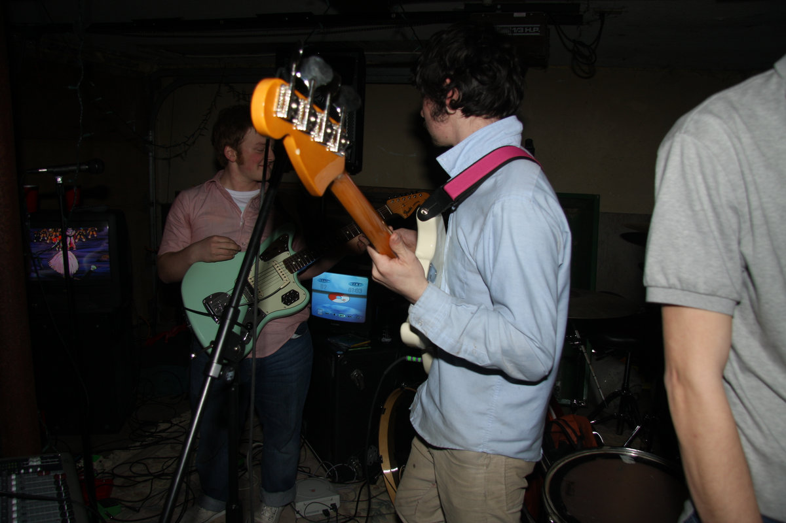

History
History
The Brave Little Abacus blended emo, indie rock, math rock, and electronic sounds. Although the band was not widely known during its active years, it later gained a strong cult following online.
Formation
The band formed in 2007 and quickly developed a unique DIY sound built around emotional vocals, distorted guitars, keyboards, and unusual song structures.
Early Releases
Projects like Demo? and Masked Dancers showed their experimental style and helped define their underground identity.

Breakthrough
Just Got Back from the Discomfort—We're Alright became their most recognized release and later gained major appreciation in online emo communities.
Post-Breakup
After disbanding in 2012, the band’s music continued to spread online, earning them a lasting cult following and influence in modern emo music.